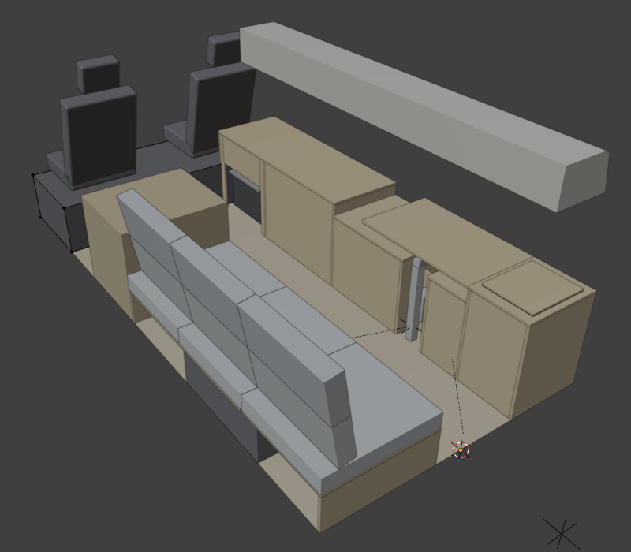
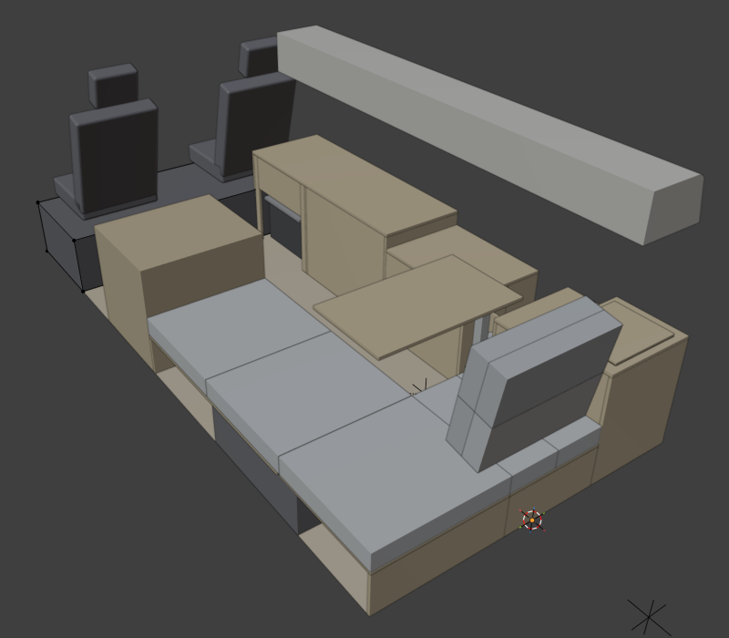
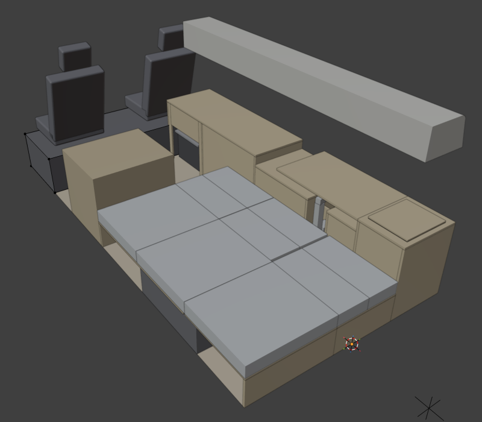

Blenderのモデル（バックドア側から見た斜め上）。シンクは蓋を閉じた状態。
Blenderモデルの寸法から自動で描いた図。部品にカーソルを合わせると名前と座標が出ます。
| 項目 | 内容 | 状態 |
|---|---|---|
| 車両寸法 | 全長4840 / 全高2105 / 荷室長3000 / 荷室幅1730 / 荷室高1390 | カタログ・確認済 |
| 天井の幅 | 約1550mm（実測） | 実測 |
| タイヤハウス | 後部から500〜1220、壁から210、高さ220（左右同じと仮定） | 実測（左右同一は仮定） |
| エンジンルーム段差 | 後部から2900、高さ350、上面の奥行200の先に前席 | 実測 |
| アッパーキャビネット（運転席側） | 奥行350 × 高さ230、後部50〜2724（運転席の150mm手前まで） | 決定 |
| 机・テーブルの高さ | 全テーブルの天板 613mm（冷蔵庫に合わせて統一）、奥行500。座面約327mm（タイヤハウス215＋合板12＋マット100）で座ると約310mm、座面との差が約300mmになり、食事・作業の目安（差270〜300）の上限に収まるので613mmのまま統一（10-08再確認） | 決定 |
| ソファベッド | 長さ1900、座面の奥行700、座面高340（箱240＋マット100）。ベッド時は机の前面まで1230mm | 決定 |
| ベッド時の引き出し量 | 530mm（1230 − 700） | 決定 |
| 背もたれクッション | 265 × 100 × 約630を2枚で1組（ソファ時は縦に積んで高さ530、ベッド時は横に並べて530を埋める）。80° | 決定 |
| 冷蔵庫 | M.O.L MOL-PF600DB（60L、750×400×555）。750を前後方向にして床のスライドレールで通路側へ500mm引き出す。運転席の後ろ（後部2122〜2882） | 決定 |
| 運転席後ろの床下収納（既存） | 壁から50離れて、後部1610〜2680（長さ1070）。幅はエンジン側160→タイヤハウス側130、深さ350。冷蔵庫のレール（2205〜2245）・仕切り板（2122〜2140）がふたの上に乗るため。電子レンジの下（1610〜2122）からはふたに手が届く。、ふたの分け方か配置の見直しが必要 | 実測（10-07） |
| 冷蔵庫のスライド | YENUO 重量用スライドレール 500mm（Amazon B08BHPHYGY、幅53×厚19、フルエクステンション、横付け最大120kg、左右1組、ロック有無を選べる。取付ねじ・金具は別売）を床に寝かせて付ける。水平使いの荷重はメーカー記載なし、横付けの1/4（30kg）を目安とする。冷蔵庫はアルミアングル2本の枠に載せ（底板なし、冷蔵庫に穴は開けずベルト固定）、通路側のアングルの下に薄型キャスター2個（レールの外側、取付高さ19mm以内）を付け、引き出したときの先端を床で支える。レールは主にガイド役。前板の下まで通して約500mm引き出し、冷蔵庫の壁側の端を天板の端（Y−365）より外へ出す。冷蔵庫は壁に付けたまま（ふたの蝶番は壁側）。重さ約19kg＋中身 | 決定（10-08） |
| 跳ね上げ天板の軸 | 窓側の軸のまま。12mm合板の天板（後部2124〜2880、Y−864〜−365、高さ601〜613）を、左右の仕切り板（2104〜2122／前端板2882〜2900、どちらも613まで）に付けた軸ピン（Y−858・高さ607）で回す。壁際の固定板と蝶番はやめた。天板の壁側の角はR6で丸め、壁とのすき間は1mm。80°で止めると、冷蔵庫のふたは約66°まで開く（ふたの蝶番が背面上端、ふた厚60mmの仮定）。天板は85°付近で傾いた壁に当たる | 仮（10-08） |
| 電子レンジ | Panasonic NE-UBS10D（494×435×370）。冷蔵庫の後ろのブロック（後部1514〜2104）の上部に置き、上面を天板裏に付ける（高さ225〜595）。棚板は207〜225で、その下（高さ207）は空き。前板は外し、排水穴付きの板も外した。上方の80mmは、天板の排気部分をくり抜いて確保する予定 | 仮 |
| シンク | TORVA RV Kitchen Sink（外形330×381×深さ178）。テーブル4に埋め込み、普段は蓋を閉じる | 検討中（8ナンバー要件） |
| 水タンク | Flou 10L（展開時220×220×280）を給水・排水で2個、テーブル4の下 | 検討中 |
| スイベルテーブル（テーブル3） | 850 × 500、天板613。2関節の折りたたみ式ブラケット。支柱は後部768・机前面の内側 | 決定（アーム長は仮定） |
| ソファベッド3（L字）の張り出し | 後部0〜633、机前面〜Y165（530）。ソファベッド1・2と同じく取り外し式。クッションは530（265×2） | 決定（10-06） |
| SUPバッグ | 920 × 420 × 220。張り出しを付けた状態でソファベッド3の下に収納（バックドアから出し入れ）。検査には持って行かない | 決定 |
| ブロック | 範囲（後部から） | 中身 |
|---|---|---|
| テーブル4 | 0〜382 | シンク（蓋付き）、下に10Lタンク×2。リアドア側の板を扉にしてリアドアからアクセス |
| スイベルテーブル後 | 382〜668 | 棚（天板525・中段240） |
| 支柱 | 668〜868 | スイベルテーブルの支柱・取付板（前面は開放） |
| スイベルテーブル前 | 868〜1496 | 棚（天板525・中段240） |
| レンジ | 1514〜2104 | 電子レンジを上部（225〜595）、棚板207〜225、下は空き。前板なし。仕切り2104〜2122 |
| 冷蔵庫 | 2122〜2882 | 冷蔵庫（スライド引き出し、前板付き）。上の天板は窓側の軸で跳ね上げ。前端の板（2882〜2900）は床まで（エンジンケースの手前） |
テーブル3（スイベル）は収納時、テーブル4とキッチン天板の間（後部383〜1233）に一直線に収まります。持ち上げずにL字ソファ前へ出せることを、出し入れの経路全体で確認済み（キッチン天板の後端は後部1496、経路との最小すき間5mm）。
寸法はmm。位置はバックドアからの距離。冷蔵庫はアルミアングルの枠に載せ、枠をスライドレールの可動側に固定する。冷蔵庫本体には穴を開けず、ベルトで枠に固定する。アングル5本で冷蔵庫の四方を囲む枠にし、左右のアングルをブロック幅いっぱいに置いたレールの動く側に全長で留める。前板・枠・冷蔵庫が一体で動く。前板の上部は、左右の支えで冷蔵庫本体の前面上部と面ファスナーで留める。
冷蔵庫は半透明で表示。濃いグレーがレール（床に寝かせて固定）、薄いグレーがアルミアングル（四方）、オレンジが前板の裏の支え（左右）、黒が面ファスナー、黄色がポケット、黒丸がキャスター。青の点線は500mm引き出したとき。
跳ね上げ天板を80°に立てると、冷蔵庫のふたは約74°まで開く（ふたの蝶番が背面の上端、ふた厚60mmの仮定）。天板は85°付近で傾いた壁に当たる。
通路側のアングルと前板の裏のアングルは、左右のアングルでつながる。前板の上部は、裏の左右の端に付けた支え（高さ462〜488）を冷蔵庫本体の前面上部（ふたの下）に面ファスナーで留めて支える。支えの間は空けて、冷蔵庫と前板の間（奥行71、幅626、高さ約560）を上から物を入れるポケットにする。底はアルミ板3mm。冷蔵庫が縦の支柱になり、前板は下端と上部の2か所で支えられる。キャスターは前板の裏のアングルの下。
レールは3段（固定側・中間・動く側）。固定側はブロック内の床にねじ止めし、中間が+250、動く側が+500まで伸びる。左右のアングルを動く側の上に重ね、赤丸の位置（約90mm間隔、片側6か所）で留める。オレンジの線は天板の通路側の端。
レールの内部は模式図。左右のアングルの水平な面を、レールの動く側の部材の上に載せ、皿ねじM4で留める（頭はアングルの上面と平らにし、冷蔵庫を浮かせない）。ナットはレールの中にあるので、レールを引き出した状態で固定側の作業穴から締める。レールの取付け穴の位置と大きさは商品ページに記載がなく、届いてから確認する。
| 部品 | 寸法・仕様 | 数 | 状態 |
|---|---|---|---|
| スライドレール | YENUO 重量用 500mm（幅53×厚19、フルエクステンション）。床に寝かせて固定。ブロックの幅いっぱい（2122〜2175・2829〜2882、芯々707）。ロック付きを推奨 | 1組（2本） | 決定 |
| アルミアングル（枠） | 30×30×3。長さ750を3本（壁側Y−863〜−833・通路側Y−487〜−457・前板の裏Y−413〜−383）、長さ480を2本（左右、立ち上がりは冷蔵庫の外側、仕切り板とのすき間約2mm）。四方の立ち上がりで冷蔵庫を囲む。左右のアングルをレールの動く側に皿ねじ（またはリベット）で全長にわたって留める。角は切り欠きか留め加工 | 5本 | 仮 |
| 前板の裏の支え | 角材 60×71×26、左右の端（2129〜2189・2815〜2875、高さ462〜488）。前板の裏にねじ止め。取っ手の両端のねじを受ける | 2個 | 仮 |
| ポケットの底板 | アルミ板3mm、746×71（Y−457〜−386、高さ22〜25）。前板の裏のアングルに載せ、通路側のアングルの立ち上がりに留める | 1枚 | 仮 |
| 面ファスナー | 3M デュアルロック等。左右の支えの冷蔵庫側（2129〜2189・2815〜2875）と、冷蔵庫本体の前面上部（ふたの下）に貼る。ふたの閉まりや前面の操作部を邪魔しない位置を実物で確認 | 2組 | 未選定 |
| 取っ手 | 横長 約720mm、高さ470〜490。両端のねじを左右の支えまで通す | 1個 | 未選定 |
| 薄型キャスター | 取付高さ19mm以内。前板の裏のアングルの下、レールの内側（2200・2800）。引き出したときに先端を床で支える | 2個 | 未選定 |
| 前板 | 760×569（高さ20〜589）。前板の裏のアングルにねじ止め | 1枚 | 仮 |
| 固定ベルト・ストッパー | 冷蔵庫を枠に固定（左右方向のずれ止めと浮き上がり防止）。ふたの開閉を妨げない位置に通す | 一式 | 未選定 |
| 跳ね上げ天板 | 12mm合板 756×499（2124〜2880、Y−864〜−365）。壁側の角R6 | 1枚 | 仮 |
| 軸ピン | φ10程度。仕切り板と前端の板に1本ずつ（Y−858、高さ607） | 2本 | 未選定 |
| 仕切り板・前端の板 | 高さ0〜613、奥行500。前端の板は床から立ててエンジンケースに載せない | 各1枚 | 仮（板厚はモデル上18mm） |
根拠: 国土交通省「用途区分通達 細部取扱い」現行版（kubun-3-4-80.pdf）、近畿運輸局 構造要件チェックシート。2022年4月改正で室内高が緩和。
エ 洗面台等を利用するための床面から上方には有効高さ1,600mm（洗面台等の上端（蛇口、レバー及び浄水器等、水を供給する構造を除く。）が、これを利用するための床面から上方に850mm以下の場合にあっては1,200mm）以上の空間を有していること。
| 要件 | 基準 | このレイアウト | 判定 |
|---|---|---|---|
| 台の高さ | 850mm以下なら上方1,200mmでよい | 天板613 | 適合 |
| 上方の有効高さ | 利用する床面（奥行300×幅500以上）から1,200以上。台の上から天井までは問われない | キッチン前の通路: 1390。シンク前（テーブル4）: ソファ時は張り出しを外して床（奥行530×幅633）、1390 | ソファ時で適合の見込み |
| 利用位置 | 正対して使え、間に他の設備がなく、床面に著しい段差がない | ソファ時はシンク前が床。オフィス・ベッド時は張り出しが入る | ソファ時で適合の見込み |
| 給水・排水タンク | 各10L以上。専用の設置場所があれば取り外し式も可（確実に固定） | Flou 10L×2（「約10L」のため12L以上が安全） | 要確認 |
| 炊事設備 | 調理台0.3×0.2m以上、コンロ等（電子レンジ可の記入例あり） | キッチン天板＋レンジ | 見込み |
| 床面への投影面積 | 水道・炊事設備と利用場所で0.5㎡以上 | 未計算 | 要計算 |
対応（10-06）: ソファベッド3（L字）の張り出しを取り外し式にし、そのクッションを背もたれに回す形にした。ソファ時はシンク前（後部0〜633、机前面から530）が床になり、上方1390mmを確保できる。ソファベッド3の箱は、ソファ時だけ前板（Y165）を付け、張り出し時はSUPバッグが箱の下をまたぐ。
最終判断は検査官。構造変更の前に、図面を持って管轄の運輸支局に確認する。
| 日付 | 内容 |
|---|---|
| 10-04 | Blenderで開始。車内の箱・窓・前席、運転席側に机（奥行500・高さ500）、助手席側にソファベッド（長さ1900）を作成。Instagramの動画を参考に「引き出し台＋背もたれクッションを寝かせる」方式に決定。 |
| 10-04 | 冷蔵庫・電子レンジの製品寸法を反映。スイベルテーブルの金具を検討し、2関節（アームとプレートが両方回る）を使って横長のままL字ソファ前へ平行移動させる位置を計算。 |
| 10-05 | テーブルを全て天板613mmに統一。タイヤハウス実測でソファの箱を240mmに上げ座面340mmに。エンジン段差（後部2900・高さ350）を反映。 |
| 10-05 | キッチンブロックを作り直し（冷蔵庫は床のレールで引き出し、上に天板）。シンク（TORVA）を追加。冷蔵庫ブロックとシンクブロックを入れ替え。棚の前面を閉じ、ブロック構成を整理。 |
| 10-05 | SUPバッグ（920×420×220）をソファベッド3の固定箱へ。ソファベッドを前へ50cm動かす案は、L字の背もたれがスイベルテーブルの出口をふさぐため（出口幅724 < 850、剛体でも出せない）元に戻した。 |
| 10-05 | 8ナンバー要件を調査。室内高は2022年改正で「台が850mm以下なら1,200mm」に緩和（当初、旧版PDFを見て1,600mmと誤って説明→訂正）。シンクをテーブル4へ移し、下に10Lタンク×2、普段は蓋を閉じる運用に。 |
| 10-06 | このページを作成。ソファベッド3の張り出しを取り外し式にし、ソファ時・オフィス時・ベッド時の3状態をBlenderで切り替えられるようにした。冷蔵庫ブロックとレンジブロックをいったん入れ替えたが、ベッド時の背もたれ部品の引っ掛け場所に妙案が出ず、元の並びに戻した。電子レンジはブロックの上部に上げ、下を空けた（前板・排水穴付きの板は外す）。ベッド時に冷蔵庫へ手が届かないため、冷蔵庫の真上の天板を壁側の蝶番で跳ね上げる構造を作った（Blenderで部品を分けて作成）。オフィス時の背もたれは、前後2重をやめてリアドア沿いに横並び（L字側1組・ソファベッド3常設部側1組、境目で約30mm重なる）。 |
| 10-07 | 運転席後ろの既存の床下収納を実測してモデルに追加。冷蔵庫ブロックとレンジブロックを再度入れ替え（レンジが後ろ、冷蔵庫が運転席側）。跳ね上げ天板も冷蔵庫に合わせて移した。 |
| 10-08 | マットの厚さ（100mm推奨）と、座面に対するテーブルの高さを検討。天板は613mmで統一のままとした。冷蔵庫のスライドは500mmのレールに決定。跳ね上げ天板は窓側の軸のまま、12mm合板＋左右の軸ピンに変更（ふた約66°）。Blenderに冷蔵庫ブロック設計用の表示を作った。冷蔵庫ブロックの前端の板をエンジンケースに載せず床まで下ろし、運転席側の家具全体を18mm後ろへずらした。差分はテーブル4（シンク）ブロックで吸収（400→382）。冷蔵庫のスライドレールをYENUO 500mm（水平使い）に決定。先端を薄型キャスターで支える方式にした。底板をやめてアルミアングルの枠にし（冷蔵庫9mm下げ、ふた約74°）、冷蔵庫ブロックの図面を追加。前板を、前板の裏のアングル＋フラットバー3本＋三角補強で枠とつなぐ形にした。枠をアングル5本で四方を囲む形にし、レールをブロック幅いっぱい（芯々707）に広げて左右のアングルを全長で留める形に変更（フラットバーは廃止）。引き出し時の図面と、レールと左右のアングルの接続断面図を追加。前板が下端だけの支えでは割れるため、裏に額縁状の補強枠（縦2本＋上の横材）と取っ手を追加（三角補強は廃止）。前板の補強枠（額縁）は撤去し、前板の裏の角材を冷蔵庫本体の前面上部に面ファスナーで留める方式に変更（ユーザー案）。前板の裏の支えを左右の端だけにし、冷蔵庫と前板の間を上から物を入れるポケットにした（ユーザー案）。 |